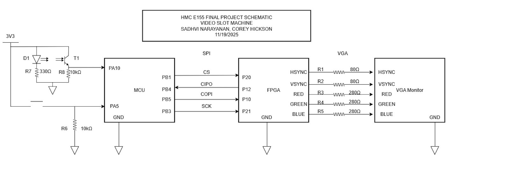

E155 Project Proposal: FPGA + MCU Slot Machine
Introduction
We are building a slot machine on the VGA.
Project Current Status
Currently, the project has the VGA working, with 3 spinning reels and is able to stop dynanamically (reel1 stops, then reel2, and then reel3) based on a counter and FSM. Additionally, the shapes come from BRAM or EBR blocks on the fpga which are loaded with 64x64 pixel resolution images, and then scaled up to 128x128 in the display. We have 7 sprites, which each take up 4 EBR blocks, as the data is distributed amongst these blocks. Currently, we are having issues displaying 2 more sprites on our display, because when we do this, it distorts the rest of the images - this tells that we are having some placement or routing issue, and we are trying to fix it by piplelineing or distributing our mux more, to reduce fan-in’s on the inputs coming in.
Design and Testing Methodology
In terms of the design for this project so far we thought about how we wanted to display the moving reels, and we decided that having an FSM where there is a state for the spinning of each of the reels, and then controls how that reel stops would be the easiest. Therefore, we have states for the spinning of each reel and the stopping condition for each reel as well. We also built our vga controller module, which is in charge of controlling vsync and hsync, and aligning with the internal counter of the VGA to synchronize our signalas. Our biggest issue right now whcih are are working on is the rom wrapper, as going into memory has posed its challenges, as adding more EBR blocks is causing the synthesis tool to place the blocks farther from the outputs than the other, having some parts of logic take in a larger fan-in, likely delaying everything. We are working on find alternatives, such as storing the data in a non EBR block, and delaying the signal in rather than out, or pipelineing and distirbuting our mux. In terms of testing, we had a a test bench that we used in simulation to verify that we were calculating our addresses correctly, and then we were pulling out the correct colors. However, although our testbench shows us that we are doing the right things, the hardware doesn’t seem ot agree due to timing issues that the simulation is not able to catch or show us. We are realy just debugging in hardware, and for the vga we using the o-scope in order to map our signals and make sure we gor the frequency we wanted.
Block Diagram

The block diagram in Figure 1 demonstrates the overall design and architecture of the design. We can see there are a variety of control modules to handle the VGA display as well as memory accesses (to display the sprites correctly). We also have ROM blocks, and other elements include a SPI module and 7-segment display for other feautures in our design.
Schematic

The schematic in Figure 2 demonstrates the overall design of how we are connecting the FPGA to the VGA monitor. Because we are only using 3-bit resolution for the pixels, we are scaling the voltage outputs to 0.7 if we want to display a color.
MCU Design –> This is yet to be implemented (ported over from proposal)
The MCU handles high-level game logic and asynchronous events.
Core MCU Functions:
- Coin Detection (Interrupt-Driven):
- External interrupt triggered by photodiode/coin slot.
- Increments credit count
- Denomination dial determines number of credits to “bet”
- Only starts game when denomination is less that or equal to number of credits
- Button Handling:
- Spin button Interrupt triggers START_SPIN sequence and message to FPGA
- Game Logic:
- Tracks credits, bets, and game state (
IDLE,SPINNING,RESULT). - Generates the true random final indices of the displayed icons from within three lists representing the three spinning reels, using these to calculate the player’s winnings and total credits
- Sends a 16 bit SPI packet to the FPGA to indicate where the three reels should stop spinning, then another for how many credits the player won, and a final one for how many credits the player has
- Waits for an ACK between all three
- Tracks credits, bets, and game state (
- Audio Control (optional):
- PWM-based simple tone for win/lose feedback.
Riskiest part of the design –> Done
VGA timing precision + display: Sending the correct pixels, at the correct rate, in the expected format, with the expected timing to the VGA from the FPGA